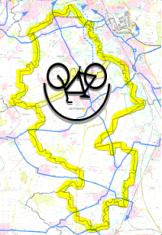
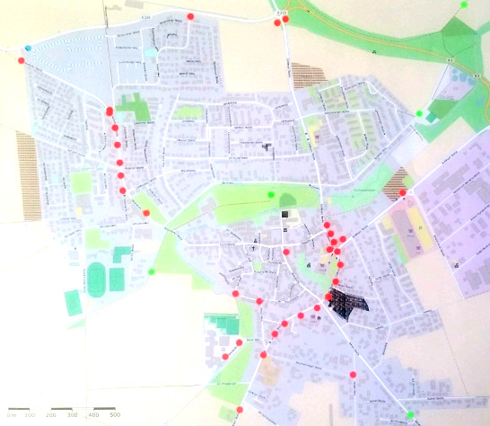

Sprecher Jens Spille, E-Mail:

Macht das Radfahren in unserer Stadt Spaß oder Stress? Bewertet mit wenig Aufwand die Fahrradfreundlichkeit in Ihrer Stadt – und gebt der Politik und Verwaltung eine wichtige Rückmeldung aus Sicht der „Alltagsexperten“.
Noch bis zum 30. November 2016 auf ADFC-FAHRRADKLIMA-TEST 2016
Der ADFC Hemmingen / Pattensen wird mit Unterstützung der Stadt Hemmingen eine Fahrrad-Selbsthilfe-Werkstatt für Jedermann auf dem Gelände der Flüchtlingsunterkunft in der Heinrich-Hertz-Straße 23 aufbauen. Der Nutzungsvertrag ist unterschrieben und die Vorbereitungen für die Werkstatteinrichtung sind gestartet. Die Ortsgruppe möchte allen interessierten Bürgerinnen und Bürgern, insbesondere den Geflüchteten eine Unterstützung bei der Wartung, Reparatur und Aufbereitung von Fahrrädern bieten und die Stadt möchte die vorhandenen Räumlichkeiten in der Heinrich-Hertz-Straße sinnvoll genutzt wissen. Sie stellt sie dem ADFC kostenlos zur Verfügung. Zunächst werden die Räume hergerichtet und dann sollen dringend benötigte Spenden-Fahrräder eingesammelt, aufbereitet und an Bedürftige gegen einen kleinen Materialkostenbeitrag weitergeben werden. Die Ehrenamtlichen ADFC-Mitglieder arbeiten dabei eng mit der Fahrradwerkstatt des Flüchtlingsnetzwerks Pattensen zusammen und werden die dortigen Erfahrungen auch in Hemmingen umsetzen.
Gemeinsam haben Stadt Hemmingen und der ADFC das Projekt jetzt auf den Weg gebracht und nach der offiziellen Schlüsselübergabe soll das Projekt zügig anlaufen.
Ermöglicht wird der Start bislang durch Förderung seitens der Bürgerstiftung Hemmingen, des Flüchtlingsnetzwerks Hemmingen, bei dem der ADFC mitarbeitet sowie durch die Hemminger Fahrradhändler Carsten Hische vom Zweirad-Fachwerk und Axel Rauer von Radsport Arnum sowie Spenden seitens Zubehörhersteller. Einige Spendenfahrräder sind schon da und der ADFC bedankt sich bei allen, die zum Erfolg beitragen. Perspektivisch sollen auch die Geflüchteten intensiv in die Arbeit eingebunden werden.
Schon am Dienstag, 15. November, von 17.30 Uhr bis 19.00 Uhr wollen die Aktiven die Tore öffnen. Dann soll es im Wochenrhythmus jeden Dienstag weitergehen.
Damit das funktioniert, werden nicht mehr benötigte Fahrräder gesucht, die von Bürgern gerne in der Heinrich-Hertz-Straße 23 zu den Öffnungszeiten abgegeben werden können. Falls ein Transport nicht möglich ist, können diese auch abgeholt werden. Auch Fahrradwerkzeug oder Zubehör und Ersatzteile können gerne abgegeben werden.
Die Ehrenamtlichen der ADFC Ortgruppe freuen sich auch über engagierte Menschen, die sich bei der Fahrradausgabe, der Organisation oder der technischen Aufbereitung der Räder einbringen wollen. Alle sind willkommen. Wer die Materialbeschaffung und den Betrieb finanziell unterstützen möchte kann dies auch gerne tun. Der gemeinnützige Verein stellt auch gerne Spendenquittungen aus.
Kontakt:
Wer Lust hat beim Herrichten der Räume und Spendenfahrräder mitzuarbeiten oder das Team bei der Fahrradausgabe zu unterstützen, kann sich am Besten bei den Kontaktpersonen melden. Ab sofort werde die Dienstage 17:30 bis 19:00 Uhr (oder länger) dazu. Dazu brauchen wir Menschen, die uns unterstützen bei:
Stadt Pattensen und das Wanderbare Calenberger Land
Stadt Hemmingen und das Radvehrkehrskonzept
Letzte Änderungen und Ergänzungen
Spontane Feierabendradtouren werden bei entsprechenden Wetter angeboten. Die ADFC Ortsgruppe hat dafür eine E-Mail Liste angelegt. Wir melden uns wenn es passt. Wer auf dieser Liste möchte, schreibe bitte an .
Die Leine Nachrichten berichteten am 15.03.2016 dass zwischen Westerfeld und Arnum an der B3 zwei Solarlaternen montiert werden sollen. Dann wünschen wir uns, dass tagsüber die Sonne scheint.
Die Leine Nachrichten berichteten am 12.03.2016 dass die Fahrbahn und Radwege der L 389 eine neue Decke bekommen. Die Abschnitte die durch Hiddestorf, Ohlendorf, Arnum und Wilkenburg verlaufenden, werden 2017 saniert. Jetzt hoffen wir alle, dass die Sanierung des besonders notwendige Abschnitts zwischen Wilkenburg und Wülfel auch wirklich erfolgt und die Baumwurzeln sich in Zukunft etwas Zurückhalten.
Pattensen: Grüne fordern weitere Radwege zur KGS so lautet die Überschrift im LeineBlitz. Insbesondere geht es um die Entlastung des Schäferkamps. Dieser Weg ist viel zu schmal für Radfahrer.
GPSies bietet die Möglichkeit Touren zu planen und mit anderen auszutauschen. Auch als Apps erhältlich.
Tipp Radtouren: Ausgewählte Radtouren der Nachbar Ortsgruppen sind unter ADFC Region Hannover Termine zu finden.
Tipp Radfahrkarte: Eine Quellen offene Radfahrkarte mit Routingfunktion git es under OpenRouteService.org. Mit der rechten Maustaste kann man Start- und Zielpunkt setzen.
Ältere Tipps und Nachrichten gibt es unter Ältere Nachrichten
Am Sonntag den 30.10. starteten wir mit leichter Verspätung. An der Tour nahmen diesmal 2 Damen und 6 Herren teil. Alle Teilnehmer waren sehr gut drauf und wir starteten bei bedeckten Himmel, ohne Regen und wenig Wind, erwartungsvoll in die weite Landschaft des Calenberger Landes. Nach einer knappen Stunde erreichten wir einen sehr schönen Aussichtsberg im Bereich der Giftener Seen und des SCS (Segelclub Sarstedt). Wir konnten rastende Zugvögel beobachten!
Danach durchquerten wir das dörflich stark geprägte Barnten mit seinem schönen Dorfplatz und vielen restaurierten Fachwerkhäusern. Sehenswert dieses Dorf, besonders das Cafe in einem restaurierten Fachwerkhaus (s.Foto). Die Zeit reichte leider nicht um dort einzukehren!
In Nordstemmen machten wir unsere erste längere Rast und stärkten uns in einem gemütlichen Eiscafe mit großen Eisbechern und Cappucino.
Von dort ging es weiter durch die Nordstemmer Seenplatte zur Klosterkirche Wittenburg, wo wir einen ziemlichen Anstieg zu bewältigen hatten. Dafür wurden wir mit der schönen Aussicht, die bis zum Giesener Kalkberg reichte, belohnt!
Nun ging es im zügigen Tempo abwärts in Richtung Osterwald zum Klostergut Wülfinghausen, auf asphaltierten Wirtschaftswegen an Apfelbaumalleen vorbei, und so mancher Apfel landete in den Packtaschen der Radler! Herrlich anzusehen war auch der herbstlich gefärbte Laubwald.
Die 2.längere Rast machten wir im Cafe Am Waldkater, wo wir leckere frisch gegrillte Bratwürste verspeisten und Obstsäfte tranken. Nun hatten wir die richtige Power um die paar vor uns liegenden Steigungen im Kleinen Deister zu bewältigen. Wir fuhren dann in den Saupark hinein und innerhalb der kilometerlangen über hundert Jahre alten Mauer hinunter zum Wisentgehäge. Dort fand gerade das Hubertusfest statt, so weit das Auge reichte, nur tausende parkende Autos.
Die letzte Etappe war mit kurzen Trinkstops, schnell bewältigt. Gegen 17h trafen wir wieder am Ausgangspunkt Hallenbad Pattensen ein, Tourlänge 60 km! Es gab keine körperlichen und technischen Ausfälle, da alle Beteilgten sich gut vorbereitet hatten! So macht das Ganze Spass!
Mit kurzer Verspätung starteten wir bei bedeckten Himmel, aber trocken, in südlicher Richtung nach Hüpede, wo wir uns die schöne Jahrhunderte alte Dorfkirche anschauten. Dann fuhren wir weiter nach Oerie, durchquerten den Oerier Wald und machten am idyllischen Rastplatz unseren ersten Zwischenstop.
Nun zeigte sich auch noch die ☀ Sonne und bestens gelaunt ging es auf einem etwas abenteuerlichen Pfad durch das Jeinser Holz! Wir sahen sogar 4 Rehe am Waldrand. Anschließend fuhren wir weiter auf einem asphaltierten Wirtschaftsweg nach Gestorf. Dort schauten wir uns das ca.750 Jahre alte Schloss an.
Anschließend fuhren wir über den Gestorfer Erdbeerhof weiter in Richtung Hallerburger Holz. Entlang des Weges gab es viele Obstbäume und wir stärkten uns mit den leckeren und reifen Früchten! Danach durchquerten das Naturshutzgebiet Hallerburger Holz und kamen an weiteren Obstbaumalleen vorbei, bis nach Adensen. Dort fuhren wir zur uralten Stein-Dorfkirche, die besichtigt werden konnte.
Mit gemächlichen Tempo ging es dann weiter über Hallerburg, Sonnenborn bis nach Eldagsen. Dort fand gerade das Kürbisfest statt, welches wir besuchten. Von dort fuhren wir weiter auf guten Wegen nach Mittelrode, wo wir unsere Mittagspause bei Kaffee und leckeren Kuchen im Garten des Hofcafes verbrachten! Wir schauten uns auch noch das freilaufende “Glücksschwein” im hinteren Teil des Gartens an, bevor wir uns
in Richtung Rittergut Bockerode auf den Weg machten, welches wir durchquerten. Danach ging es weiter in nördlicher Richtung nach Bennigsen.
Wir konnten wegen der klaren Sicht ringsherum örtliche Regenschauer ausmachen, die uns aber nicht trafen und so kamen wir fast trocken in Lüdersen an. Von dort ging es auf dem Calenberger Ackerweg weiter in Richtung Pattensen. Bei einem kurzen Zwischenstop stellten wir fest, dass die gute Fernsicht bis zum Brocken reichte.
Gegen 15:30 kamen wir wieder am Ausgangspunkt in Pattensen an. Es gab keine körperlichen und technischen Ausfälle. Die Teilnehmer waren sehr zufrieden mit der durchgeführten Tour und werden uns weiter empfehlen. Wir fuhren insgesamt ein sehr moderates Tempo mit einigen Zusatzstops, was aber gut bei den Teilnehmern ankam. Es war eine sehr abwechslungsreiche Tour!
Mit leichter Verspätung, starteten wir mit 7 Herren und 3 Damen bei allerbestem Wetter, durch die Feldmark, an Windrädern vorbei nach Jeinsen, wo wir den schönen Dorplatz überquerten und weiter nach Schulenburg fuhren. Wir schauten uns das ehemalige und vorbildlich restaurierte Gut von Ernst-August von Hannover, von außen an.
Hinter Schulenburg fuhren wir auf dem Leine-Heide-Radweg in Richtung Nordstemmen, das Schloß Marienburg immer im Blick. Hinter Burgstemmen gab es die erste “Bergprüfung”, die 4 E-Bike-Radler zogen zügig den Berg hinauf, aber auch die anderen schoben ihr Radl nicht.
Dann ging es weiter zum kleinen Örtchen Haus Escherde, am Rande des Hildesheimer Waldes. Dort schauten wir uns das aus dem 12.JH stammende Klostergut an. Hier gab es auch eine Einkehrmöglichjkeit in der historischen Gaststätte Klosterstuben. Nach dem wir uns gestärkt hatten, begann die 2. Bergprüfung. Es ging ca. 2KM hinauf zum Escherberg. Oben angekommen wurden wir mit einer entspannenden Abfahrt in Richtung Sorsum belohnt! Unten angekommen ging es natürlich wieder aufwärts, zum Rottsberg und weiter zu den Bosch-Blaupunkt Werken! Hier mussten wir eine Radlerin, die Probleme mit Ihrem E-Bike hatte, verabschieden! Sie wurde dann kurz danach mit dem PKW abgeholt!
Dann wieder eine rasante Abfahrt zum Kloster Marienrode (12.JH). Wir schauten uns die beeindruckende Anlage an und gingen auch in eine der beiden Klosterkirchen!
Von dort aus fuhren wir durch eine landschaftlich sehr schöne Gegend hinauf zum Steinberg, wo sich eine empfehlenswerte historische Gaststätte mit Wildgehege befindet. Von dort aus ging es dann nur noch bergab ins Innerstetal zwischen Marienburg und Hildesheim.
Nach ein paar Kilometer Fahrt am Fluss entlang, kehrten wir in das Inselcafe in Hildesheim ein, und genossen auf der Terrasse Kaffee und Kuchen und konnte sogar im Wildwasser-Parcour die Kanufahrer beobachten, wie sie kenterten!
Von dort aus ging es im zügigen Tempo weiter über Giesen nach Giften, an den Giftener Teichen vorbei zurück nach Jeinsen und Pattensen, wo sich der Kreis schloss!
Es gab, bis auf das technische Problem mit dem E-Bike, keine körperlichen Ausfälle, alle Radler waren von der Vielfäftigkeit der Strecke begeistert und rundum zufrieden!
Die 25. Feierabend-Radtour startete am Mittwoch den 10. August mit 7 Radlern (2 Damen und 5 Herren). Die Fahrt ging über Empelde, an Ronnenberg vorbei nach Gehrden. Von dort ging es auf einem sehr schönen Rundweg mit guter Aussicht auf den Deister, um den Gehrdener Berg. Zurück fuhren wir über Weetzen, Vörie und Ihme-Roloven. Nach ca. 3 Std. und 35 km erreichten wir Hemmingen.
Die 24. Feierabend-Radtour startete am Mittwoch den 3. August mit vier Radlern. Die Fahrt ging über Empelde, am Benther Berg vorbei, durch Velber an den Mittellandkanal. Von dort fuhren wir nach einer kurzen Pause über Ahlem, an der Leine und Ihme zurück. Nach ca. 2 Std. und 30 km erreichten wir, immer noch trocken, Hemmingen.
Ein original „Bakfiets“ aus den Niederlanden ist diese Hannah. Die darf maximal 180kg beladen, inklusive Fahrer/in, beladen werden. Auf der Sitzbank können zwei Kleinkinder sitzen, die mit den Dreipunktgurten sicher angeschnallt werden. Diese Hannah ist mit Elektromotor ausgestattet und besonders leicht zu fahren! Der volle Akku bringt dich bis zu 90km durch die Region.
Vom 1. Juli 2016 - 31. Juli 2016 konnte Hannah während der Öffnungszeiten an der Verleihstation kostenlos ausgeliehen werden. Vorher musste Hannah über Hannahs Webseite gebucht werden.
REWE Lutz Ahlers OHG
Johann-Koch-Straße 2
30982 Pattensen
Öffnungszeiten: Mo-Sa 07:00-22:00 UhrDie 23. Feierabendtour startete diesmal am Donnerstag, den 23. Juli wieder von Pattensen aus!
Mit einer Damen und drei Herren, alle aus Pattensen, mit bedeckten Himmel und angenehmer Temperatur von 21° C startete die Gruppe in südlicher Richtung. Es ging auf dem “Oerier Wald und Flurweg” zum Rastplatz am Oerier Wald.
Von dort aus fuhren wir über einen schmalen Waldpfad durch das Jeinser Holz, weiter zum Gestorfer Erdbeehof, wo wir uns die Anlage anschauten.
Von dort aus fuhren wir an der Obstbaumallee vorbei ins Hallerburger Holz. Auf dem schönen Adenser Dorfplatz legten wir eine kurze Pause ein und fuhren dann hinauf zum Marienberg. Oben angekommen, fuhren wir auf einem abenteuerlichen Pfad am Waldrand wieder den Berg hinunter nach Schulenburg.
Ziel war der schöne Biergarten in Jeinsen, wo wir die verdiente Currywurst samt Weizenbier zu uns nahmen! Nach einem kurzen Wolkenbruch machten wir uns auf den Heimweg nach Pattensen!
🚲 Der Köllbrinkweg, der Klewertweg und in Abschnitten der Straßen “Börie” und “Im Dorffeld” sind jetzt Fahrradstaßen. Fahrradstraße? Was bedeutet das? Hier bekommen Sie alle Informationen!
Die 22. Feierabend-Radtour startete am Mittwoch den 20. Juli mit fünf Radlern (1 Dame und 4 Herren). Bei ca. 30 ° im Schatten war klar, möglichst viel im Wald zu fahren. Es ging in die Eilenriede, vorbei am Zoo, Steuerndieb und Herrmann-Löns-Park kamen wir zum Tierpark. Der Rückweg ging nach einer kurzen Rast vorbei am Kronsberg und durch die Leinemasch. Nach ca. 3 Std. und 35 km erreichten wir wieder Hemmingen.
Die 21. Feierabend-Radtour sollte zu den Giftener Seen führen. Trotz dicker, schwarzer Wolken starten vier unentwegte Radler gen Süden. Über Harkenbleck und Koldingen ging es nach Ruthe. An der Versuchsantalt der Uni Hannover beschlossen wir, nach einem Blick zum Himmel, die Tour abzukürzen und fuhren an den Koldinger Teichen vorbei, zurück in die Leinemasch. Der Rückweg wurde durch eine halbstündige Regenpause unterbrochen. Wir erreichten Hemmingen nach ca. 30 km nicht mehr so ganz trocken.
Die 20. Feierabend-Radtour ging am Mittwoch den 6. Juli bei trockenem und windigem Wetter mit einigen kurzen Zwischenstopps mit 5 Radlern und knappen 28 Kilometern gegen 20:30 Uhr zu Ende.
Die 19. Feierabend-Radtour ging am Mittwoch den 29. Juni mit 4 Damen und 5 Herren auf eine Radrundreise ins südlichen Calenberger Land. Vom Rathaus in Pattensen ging es durch die schöne Pattenser Altstadt mit Gegenwind in Richtung Hüpede. Mit moderatem Tempo weiter durch eine leicht hügelige Landschaft mit sehr guter Fernsicht, in Richtung Bennigsen. Am Rittergut Bockerode erlaubte der Besitzer uns auf einer gemütlichen Rundbank unter einem großen Baum eine Pause einzulegen. Über Hallerburg und Gestorf ging es wieder zum Ausgangspunkt Pattensen.
Die 18. Feierabend-Radtour ging am Mittwoch den 22. Juni mit sechs Radlern (4 Herren und 2 Damen) bei sehr gutem Wetter, auf vielfachen Wunsch nochmals durch die Eilenriede und den Herrmann-Löns-Park zur Anderter Schleuse. Nach einer kurzen Rast ging es auf den höchsten Punkt des Kronsbergs (118 m ü. NN). Die schöne Aussicht über Hannover und bis zum Brocken entschädigte für den letzten steilen Anstieg. Nach ca. 3 Std. und 35 km erreichten wir wieder Hemmingen.
Der 13. RadlerTreff fand am 16. Juni 2016 um 19:00 im Bürgersaal Hemmingen (Im Rathaus, EG) statt. Themen waren u.a. Stadtradeln und Berichte über diverse Sitzungen.
Die 17. Feierabendtour, mit 22 km Länge, verlief am 15. Juni mit 4 Personen über Wettbergen, Bornum, Lindener Berg, Linden, Maschsee und Döhrener Wolle.
Die 16. Feierabendtour ging an 8. Juni mit 3 Damen und 3 Herren, bei schönem Wetter, gemütlich durch die Leine-Marsch. Nach einem Besuch des Park der Sinne und 25 km Strecke ging die Tour zu Ende.
Mit 40 TeilnehmerInnen und jeweils 52 gefahrenen Kilometern und insgesamt 2080 km haben wir einen wundervollen Tag verbracht und danken als ADFC allen, die das ermöglicht haben und insbesondere den Mitgestalterinnen und unseren Tourenleitern und natürlich allen TeilnehmerInnen, denen es sehr gut gefallen hat. Und das, obwohl die kalte Dusche des Gewitterschauers auf den letzten Kilometern einige doch noch bis auf die Haut durchnässt hat.
Die ca. 50 Km lange Stecke führte uns über Arnum durch das Bürgerholz zum Radlerfrühstück nach Devese zu Mutter Buermann. Gestärkt ging es weiter über Ihme-Roloven nach Holtensen und aufwärts zu den Windrädern bei Lüdersen hoch. Weiter geht es über Gestorf nach Thiedenwiese und Jeinsen. Dort fuhren wir über die Leinebrücke durch die herrliche Seenlandschaft nach Ruthe. Am Versuchsgut vorbei geht es weiter nach Koldingen, und durch das Fuchsbachtal zurück nach Pattensen zu dem Erlebnistag am Calenberg-Center.
Mehr Eindrücke von unserem Stadtradelstar hier.
Die 15. Feierabend-Radtour ging am Donnerstag den 2. Juni mit fünf Radlern (3 Herren und 2 Damen) bei anfangs gutem Wetter rund um den Benther Berg. Wir sind gemütlich über Wettbergen zur Kükenmühle geradelt, an Ronnenberg vorbei zu den sagenumwobenen Sieben Trappen bei Benthe. Danach ging es eine kurze Steigung hinauf zum Benther Berg, den wir auf einem schönen Weg umrundeten. Leider zog plötzlich ein Gewitter auf, und es begann heftig zu regnen. In Benthe fanden wir einen Unterschlupf. Nach einer kappen halben Stunde war der Spuk vorbei und wir konnten unsere Fahrt fortsetzen. Auf schnellstem Weg ging es dann über Empelde und Wettbergen zurück. Nach ca. 2 1/2 Stunden, 28 km und einer feuchtfröhlichen Fahrt waren wir wieder zurück in Hemmingen.
 Mit Kaffee und Brötchen starteten viele Pattenser und Hemminger um 11:15 zur Sternfahrt.
Mit Kaffee und Brötchen starteten viele Pattenser und Hemminger um 11:15 zur Sternfahrt.
Am 12. Juni 2016 veranstaltet der ADFC Region Hannover in Kooperation mit der AOK Hannover, der Region Hannover und der Hannoverschen Allgemeinen Zeitung eine ganztätige Radtour in und um Hannover. Der RAD-WANDER-TAG war eingebunden in den Wettbewerb „Stadtradeln“, der vom 29. Mai - 18. Juni 2015 stattfand.
Die 14. Feierabend-Radtour ging am Mittwoch den 25. Mai mit fünf Radlern (3 Herren und 2 Damen) bei gutem Wetter zum Süllberg bei Lüdersen. Wir sind gemütlich über Wettbergen zur Kükenmühle geradelt, auf einem Rundweg um Ihme-Roloven, weiter nach Vörie und Holtensen. Hinter der Kirche haben wir einen Naturlehrpfad durchfahren Danach ging es ziemlich steil den Süllberg hinauf. An einem Windrad haben wir Rast gemacht und hatten einen schönen Rundumblick auf Deister, Gehrden, Benter Berg und Hannover. Leider war es etwas diesig. Danach konnten wir die Abfahrt nach Lüdersen genießen. Im Bereich Pattensen befuhren wir u.a. den “Calenberger Ackerweg” den das Wegeteam vor kurzem mit Hinweisschildern, über die auf den Feldern angebauten Getreidesorten und Feldfrüchte, versehen hat. Dann ging es weiter durch Hiddesdorf und Arnum. Nach ca. 2 1/2 Stunden, 28 km und einer sehr schönen Fahrt waren wir wieder zurück in Hemmingen.
Am Do. den 12. Mai gab es einen Stand auf dem Hemminger Wochenmarkt um das Stadtradeln bekannt zu machen. Organisiert wurde der Stand von der Stadt Hemmingen, der Region Hannover und dem ADFC. Anmelden kann sich jeder unter Stadtradeln.de. Die Stadt Hemmingen ist das erste Mal dabei. Jeder Bürger, Vereine, Schulklassen und Firmen können sich beteiligen und die gefahrenen Fahrradkilometer im Zeitraum vom 29. Mai bis 18. Juni einbringen. Als Stadtradel-Star wird Alexandra Jaeger in den drei Wochen ihr Auto gegen Hannah, das Lastenrad-Pedelec des ADFC tauschen.
Die 13. Feierabend-Radtour ging am Mittwoch den 11. Mai mit vier Radlern (3 Herren und eine Dame) bei herrlichem Sonnenschein zur Anderter Schleuse. Wir sind in knapp 3 Stunden gemütlich an den Hemminger Teichen vorbei zum Maschsee, dann durch die Eilenriede Richtung Bischofshol, den Herrmann-Löns-Park, bis zum Mittellandkanal gefahren. An der Anderter Schleuse haben wir eine kurze Rast eingelegt und konnten die Schleuse in Betrieb sehen. Der Rückweg ging dann über den Kronsberg mit schöner Aussicht über Hannover, am Expo-Gelände vorbei, durch Laatzen und die Leinemasch. Nach gut 32 km und einer abwechslungsreichen, kurzweiligen Fahrt waren wir pünktlich zum Sonnenuntergang zurück in Hemmingen.
Am 24. April 2016 ist eine Gruppe von Radlern zum Kaliberg Giesen gefahren. Gegen 14:15 hörte der Schneeregen auf und die Sonne kam durch. Die Radler waren, entsprechend der Witterung, gekleidet, und haben einstimmig beschlossen die Tour zu fahren. Über die Calenberger Ackerwege und Schliekum, fuhren sie durch die schöne frühlingshafte Seenlandschaft bei Giften. Weiter ging es über Feldwege in Richtung des schon sichtbaren Kalibergs. Nach dem Studium der Schautafeln über das ehemalige Kalibergwerk und eine Umrundung des Kalibergs ging es weiter über die Innerste, den romantischen Innerste-Heide-Radweg entlang, an Technikdenkmälern vorbei bis nach Sarstedt hinein! Anschließend ging es am landwirtschaftlichen Lehrgut vorbei nach Koldingen. Zwischendurch gab es viele kleine und große Pausen mit Besichtigungen. Alle waren bester Laune und alle waren sehr zufrieden mit der 38 km langen Tour!
Mehr zu der Tour
Die erste 🚲 Frühlingsauftagtradtour am Donnerstag den 14.April hat mit fünf Radlern (4 Herren und eine Dame) über den Lindenerberg geführt. Wir sind in gut 2 Stunden gemütlich über die Kückmühle, an Mühlenberg vorbei durch die blühenden Schrebergärten in Bornum auf den Lindenerberg gefahren. Nach einer kurzen Pause im Garten auf dem Friedhof, mit einem kleinem Rest von Scilla-Blüten ging es im Zickzack durch Linden. An der Bettfedernfabrik vorbei, an der Ihme und durch die Leinemarsch zurück zum Rathausplatz. Nach gut 24 km und netten Gesprächen im herrlichen Sonnenschein eine schöne Feierabend-Radtour.
Am Montag, den 11. April wurde in Hemmingen der Koordinierungskreis des ‘Hemminger Netzwerk für Flüchtlinge’ gegründet. Mitglieder sind Vertreter der Arbeitsgruppen wie. z.B. die Deutschgruppen, das interkulturelle Kreativ-Kaffee, Patenschaften und die ADFC Ortsgruppe Hemmingen/Pattensen 🔧.
Am verkaufsoffenen Sonntag, den 10. April 2016 am Rewe-Center, hatte der ADFC einen Infostand aufgebaut.  . Links und rechts neben dem ADFC-Stand gab es Informationen vom Wegeteam, Netzwerk für Flüchtlinge und zum Thema Stadtradeln 🚲.
. Links und rechts neben dem ADFC-Stand gab es Informationen vom Wegeteam, Netzwerk für Flüchtlinge und zum Thema Stadtradeln 🚲.
Auf dem ADFC-Stand gab es Informationen rund um das Lastenrad “Hannah”, die geplanten Radtouren und einen Stadtplan auf dem Besucher mithilfe von Klebepunkten positive und auch kritische Radwegeführungen in Pattensen markieren konnten. 
Der 12. RadlerTreff fand am 6. April um 19:00 in den Räumlichkeiten Villa MitMensch des Bundesverband Selbsthilfe Körperbehinderter e.V. in Pattensen statt. Besprochen wurden Aktionen zum fairen Umgang aller Verkehrsteilnehmer im Straßenverkehr. Das geplante Fahrradkompetenztraining “Train the Trainer” in Zusammenarbeit mit den Flüchtlingsnetzwerkern aus Pattensen. Veranstaltungen zum Stadtradeln 2016, das dieses Jahr vom 29. Mai bis 18. Juni stattfindet. Der ADFC wird eine gemeinsame Tour zur Auftaktveranstalltung “Fahrradsternfahrt” am 29.05.2016 (über die Schnellwege) von Pattensen, über Harkenbleck, Wilkenburg und Hemmingen Dorf anbieten. Weiterhin wurde die Organisation des ADFC-Infostandes am verkaufsoffenen Sonntag, den 10. April am Rewe Center besprochen. Weitere Themen waren die geplanten Touren, der Schulwegplan Pattensen und vieles mehr.
Mehr aus der Vergangenheit
Die ADFC Geschäftsstelle:
ADFC Allgemeiner Deutscher Fahrrad-Club / Region Hannover e.V.
Geschäftsstelle
Hausmannstr. 9-10
30159 Hannover
Tel.: (0511) 16403-12
Mitglied werden: kann man hier
Mit fahrradfreundlichen Grüßen, die ADFC Ortsgruppe Hemmingen/Pattensen. - 2016-11-02-19h50.